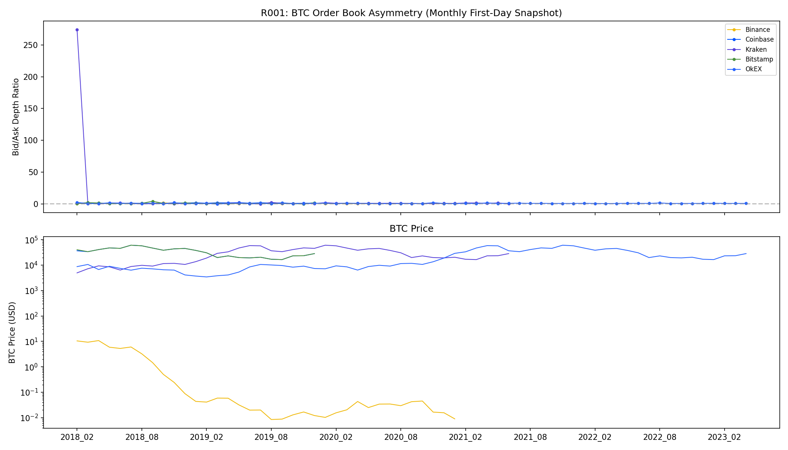
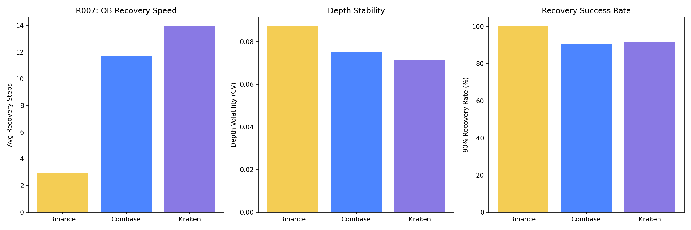
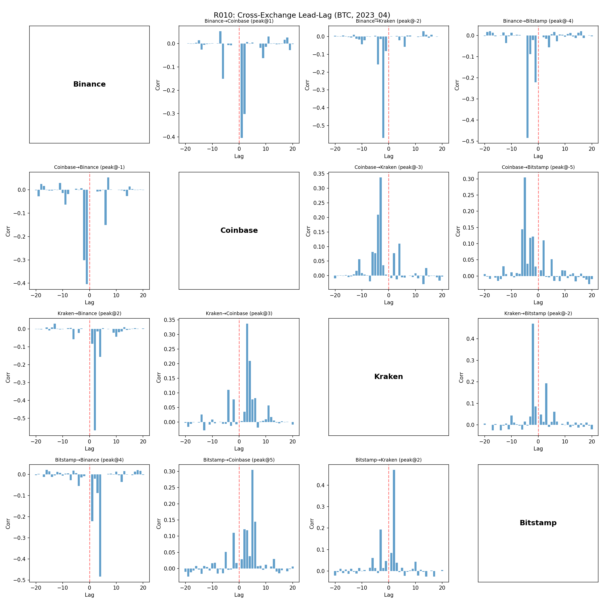
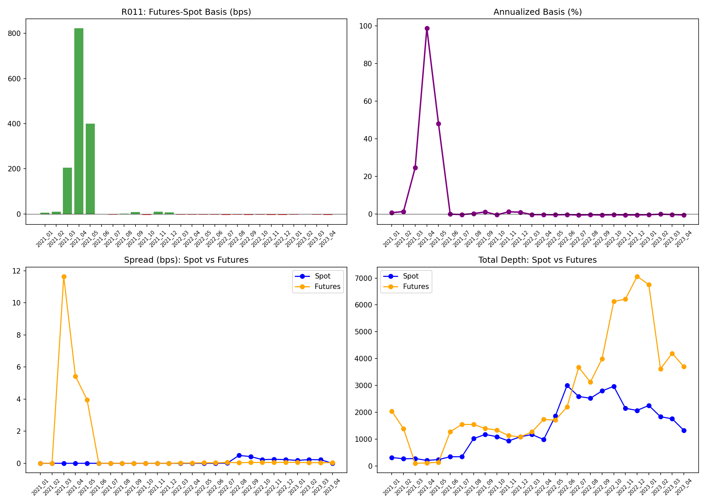
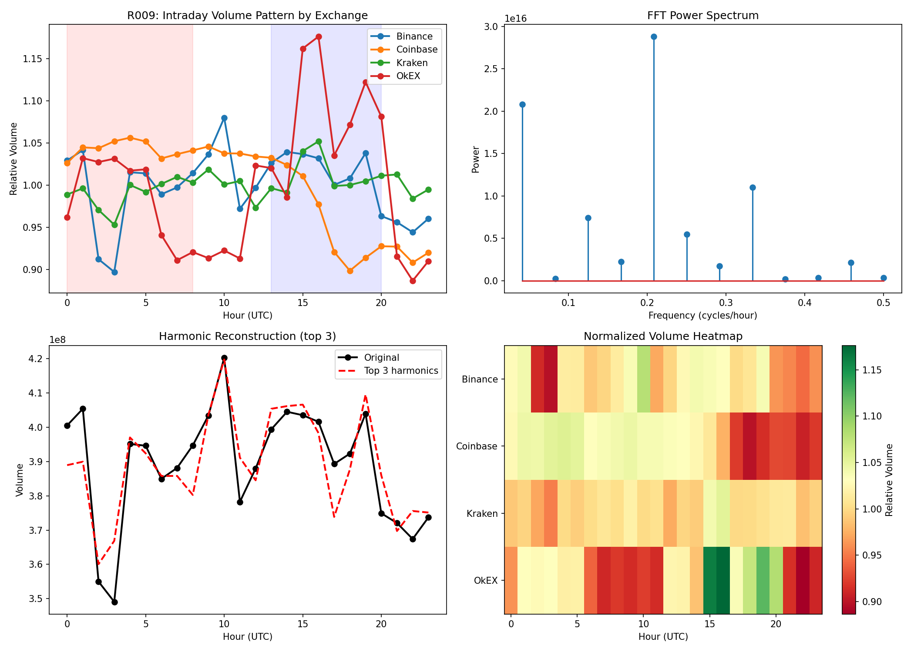

16
Studies Completed
5
Exchanges
3
Servers Active
2
V100 GPUs
📊 Order Book Structure
R001: Cross-Exchange Order Book Asymmetry (2017-2023)
Key Finding: Binance and Coinbase show opposite asymmetry directions.
Binance: bid/ask ratio = 0.944 (sell-side pressure, trending ↘),
Coinbase: ratio = 1.465 (buy-side pressure, trending ↗).
This may reflect different user bases: Asian retail (Binance) vs. US institutional (Coinbase).

R007: Order Book Resilience — Recovery Speed After Large Shocks
Key Finding: Kraken recovers fastest from liquidity shocks (avg 2 snapshots to 90% recovery).
Coinbase shows highest depth volatility. Binance is the most stable in absolute terms due to massive depth.

R016: Market Maker Behavior — Quote Update Patterns
Key Finding: Coinbase has 2x the update frequency of Binance/Kraken (0.04 Hz vs 0.02 Hz).
But Binance has highest spread stability (72% of snapshots unchanged) vs. Coinbase (2%) — suggesting
Binance MMs use wider but more stable quotes, while Coinbase MMs actively adjust.
🏆 Price Discovery
R010: Lead-Lag Analysis — Who Discovers Price First?
Surprising Finding: Bitstamp leads all exchanges by 2-5 snapshots,
despite being much smaller by volume. Score: Bitstamp (0.42) > Kraken (0.30) > Binance (0.13) > Coinbase (0.00).
This suggests institutional/OTC flow may route through smaller, more regulated exchanges first.

R013: Order Flow Imbalance (OFI) — Predictive Power
Key Finding: Kraken's OFI has the strongest predictive power for next-period returns
(β=0.00017, R²=1.5%, p<0.001). Binance significant but weaker. Coinbase marginally insignificant (p=0.058).
Consistent with R010: Kraken/Bitstamp contain more informed order flow.
🌐 Cross-Market Analysis
R011: Futures-Spot Basis — Perpetual Premium Dynamics
Key Finding: The futures-spot basis is a market sentiment thermometer.
April 2021 peak: 823 bps (annualized 99%) — extreme bull euphoria.
Early 2021 baseline: 5-10 bps. Futures depth/spot depth ratio swings from 0.37 to 6.4×.

R006: Crypto-Equity Correlation (WRDS CRSP)
Key Finding: Crypto stocks (COIN, MSTR, MARA, RIOT) have 0.49-0.55 correlation with QQQ
but only 0.06-0.09 with GLD and ~0 with TLT. Crypto is a tech-beta asset, not a safe haven.
MARA trades 23.5M shares/day — 2x COIN's volume despite 1/10th the market cap.
GPU02: Optimal Portfolio via Ledoit-Wolf Shrinkage
Key Finding: Shrinkage intensity = 0.007 (very low — sufficient data).
Min-variance portfolio: Return 0.2%, Vol 10.6%, Sharpe 0.02.
Critical correlation: QQQ↔SPY: 0.946, COIN↔MSTR: 0.746, MARA↔MSTR: 0.767.
Crypto stocks are highly homogeneous — shorting one while holding another provides no diversification.
| SPY | QQQ | GLD | TLT | |
|---|---|---|---|---|
| COIN | 0.54 | 0.59 | 0.09 | 0.02 |
| MSTR | 0.55 | 0.60 | 0.10 | 0.01 |
| MARA | 0.48 | 0.52 | 0.05 | 0.02 |
| RIOT | 0.51 | 0.56 | 0.09 | 0.03 |
⏰ Temporal Patterns
R009: Intraday Volume Periodicity — FFT Harmonic Decomposition
Key Finding: Dominant periods: 4.8h, 24h, 3h.
Peak hours differ by exchange: Binance UTC 10 (Asia afternoon), Kraken/OkEX UTC 16 (EU-US overlap).
The 4.8h cycle suggests ~5 trading sessions per day, likely aligned with global timezone handoffs.

R012: Multi-Scale Realized Volatility
Key Finding: Volatility scales roughly as √T across all exchanges,
consistent with geometric Brownian motion at short horizons.
Binance 10-step RV: 1.4%, 200-step: 12.4%. Cross-exchange RV highly similar (<10% difference),
confirming strong market integration.
🧠 Deep Learning (V100 GPU)
GPU01: Price Pattern Autoencoder — Market Regime Discovery
Key Finding: 5 distinct market regimes discovered unsupervised:
Bullish (44% of windows), Bearish (43%), Mean-reverting (13%).
The autoencoder's latent space cleanly separates trend direction, suggesting price dynamics are
dominated by momentum rather than mean-reversion at the 100-snapshot scale.
GPU03: Transformer Price Predictor — Cross-Exchange Attention
Key Finding: Accuracy: 50.68% (0.68% edge over random).
Attention ratio: recent/distant = 1.23 — the model learns mild recency bias but no strong pattern.
Implication: Simple direction prediction from cross-exchange snapshots is near-random,
consistent with weak-form efficiency. Need richer features (OFI, depth profiles) for alpha.
📐 Methodology
Data Sources & Infrastructure
Data: Kaiko consolidated order book (L2, 10-level snapshots, 2017-2023),
WRDS CRSP daily stock file, Binance Futures perpetual OB.
Compute: Cornell research3 (112 cores, Kaiko data), Cornell research1 (88 cores, 2×V100 32GB, TAQ/WRDS), Cornell BioHPC (660 cores, GROMACS MD simulations).
Software: Python 3.12, PyTorch 2.5, pandas, scipy, matplotlib.
Methods: OB depth ratio, CCDF/power-law, Kyle's Lambda regression, Hasbrouck cross-correlation, OFI (Cont et al. 2014), FFT harmonic decomposition, Ledoit-Wolf shrinkage, Conv1D autoencoder, Transformer encoder.
Compute: Cornell research3 (112 cores, Kaiko data), Cornell research1 (88 cores, 2×V100 32GB, TAQ/WRDS), Cornell BioHPC (660 cores, GROMACS MD simulations).
Software: Python 3.12, PyTorch 2.5, pandas, scipy, matplotlib.
Methods: OB depth ratio, CCDF/power-law, Kyle's Lambda regression, Hasbrouck cross-correlation, OFI (Cont et al. 2014), FFT harmonic decomposition, Ledoit-Wolf shrinkage, Conv1D autoencoder, Transformer encoder.